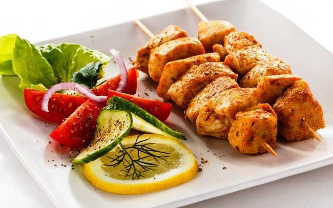

Cuando hablamos de recetas de pollo imaginamos platos estofados, horneados, fritos, salteados, a la plancha, todos con diferentes ingredientes, salsas y guarniciones. Eso es lo bueno del pollo: se puede preparar de mil maneras y (casi) siempre queda delicioso. Las posibilidades son prácticamente infinitas.
Si a esto le sumamos que se trata de una carne alta en proteínas, saludable, amigable para el bolsillo y que le gusta a casi todos, entonces podemos concluir que tenemos la comida ideal, que no aburre (a menos que sólo sepas comer pechugas a la plancha todo el tiempo) y que alimenta de maravilla.
Además, cada una de las piezas de pollo da resultados distintos a la hora de cocinarlas. Incluso cada parte del animal tiene diferentes sabores y texturas.
platillo realido por el chef fredo.
Hamburguersa super espcial de 3 carnes

delicioso sabroso almuerzo
Receta de ensalada
06/03/2017
El Fiambre es un plato tradicional de Guatemala que se come el 1 de noviembre día en el que, como en muchos países católicos, se celebra el Día de Todos los Santos. Es como una ensalada que puede llegar a tener más de 50 ingredientes y aunque no exista una única receta para el fiambre podemos clasificar su contenido en cuatro grupos: carnes, embutidos, verduras y quesos. Además lleva varios tipos de aderezo.
En Guatemala, Centroamérica, el fiambre es un platillo tradicional del mes de noviembre, el cual se prepara con carnes frías, embutidos y vegetales encurtidos sazonados de forma especial, el cual se come el día 1 y 2 del mes para celebrar el Día de Todos los Santos y el Día de Todos los Difuntos. Existen dos variantes, rojo y blanco el cual se diferencia por el uso de remolacha (o betabel) el cual proporciona el color característico del fiambre rojo.
El Fiambre es una de las mejores expresiones de la tradición guatemalteca; representa la pluriculturalidad y multiculturalidad de nuestra raza.
Los habitantes mesoamericanos aportaron las verduras y los castellanos (españoles) los embutidos, los cuales fueron aportados por los árabes. Pero la combinación peculiar se efectuó en las cocinas guatemaltecas. A lo largo de tantos años cada región le ha dado un sabor especial y cada hogar le proporciona el toque que le hace memorable y digno de comerse solamente una vez al año. No importando la variante regional ni el lugar donde se sirve, se come en cualquier parte del país y brinda una agradable sensación al paladar, que viene de una larga experiencia culinaria la cual mientras se prepara o se consume es una manera de recordar y dar homenaje a los seres queridos que ya no están presentes en vida.
En el Fiambre se establece toda la identidad varias subculturas de Guatemala, el uso de las verduras y su aderezado es herencia evidente del mundo prehispánico; el empleo de distintos tipos de carnes y embutidos, de ascendencia española, y el uso de quesos, alcaparras, aceitunas y otras especias, de auténtica herencia árabe. Su origen fue la creatividad de las anónimas cocineras guatemaltecas que le dieron su connotación especial y nacional, lo cual hace el Fiambre sea uno de los platillos más tradicionales de Guatemala..
no puedes dejas de probar esta la delicatese de la casa